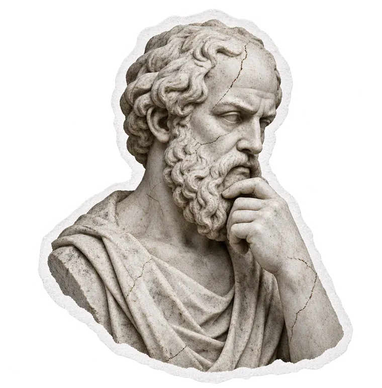

День 1 ✓День 2День 3
Кредитки и МФО. Ещё +40 000 ₽ с того же человека.
Второй материал из трёх. Объясняю на пальцах — даже если ты никогда не брал ни кредитку, ни займ. Читай по порядку, это 15 минут.
Начать день 2

Второй материал из трёх. Объясняю на пальцах — даже если ты никогда не брал ни кредитку, ни займ. Читай по порядку, это 15 минут.
Начать день 2Вчера: самозанятость, ЛидГид и ФЦН, дебетовые карты, ИП через Альфу, РКО по золотому кругу. Сегодня с того же человека добираем ещё два продукта. Каждый следующий — чуть сложнее предыдущего и платит больше.
Твои деньги. Одобряют всем.
~1 500 ₽ за картуСамый жирный продукт.
~85 000 ₽ с ИПДеньги банка. Платят в 2–3 раза больше дебеток.
2 200–5 200 ₽ за картуСамый последний и самый технический.
2 600–6 000 ₽ за займПолучил зарплату, мама скинула 500 рублей — это твои деньги. Ты ими просто пользуешься.
Банк даёт тебе, например, 20 000 ₽ в пользование. Тратишь — но обязуешься вернуть.
Тебе есть 18 и ты дееспособный — ты имеешь полное право оформить кредитку. Одобряют реже, чем дебетовки, но большинству молодых — да.
Банк хочет, чтобы ты стал его клиентом и пользовался картой. Поэтому за нового клиента он платит партнёрке, а партнёрка — тебе.
Пользоваться с умом. Не спускать банковские деньги на ерунду и всегда возвращать в беспроцентный период.
Многие ставят его и забывают. Если он стоит — банк откажет автоматически, и человек даже не поймёт почему. Поэтому спрашиваешь до того, как дал ссылку.
Если не знает — проверить можно в Госуслугах за минуту.
Снимается через Госуслуги, занимает около 3 дней. Подождал — и подаёшь заявку.
Это уже решает сам человек.
У каждой карты своё целевое действие — то, что нужно сделать, чтобы банк засчитал клиента. Самое простое — Яндекс Сплит: платят за сам факт выдачи карты.
Слово «займ» пугает людей ещё до того, как ты успел что-то объяснить. В голове сразу: коллекторы, долги, проценты. Поэтому МФО никогда не предлагаем первым. Только когда человек уже доверяет.
РКО, дебетовки, кредитки. Человек уже видел реальные деньги на своих счетах и понял, что ты не обманываешь.
Честно рассказываешь, как это работает и какие риски. Без запугивания, но и без утайки.
Не раньше. Если человек сомневается — не дави. Лучше потерять один займ, чем всего человека.
«Последнее, что можем докрутить, — самое быстрое и самое выгодное по деньгам. Берёшь займ 5 тысяч на 14 дней в беспроцентный период и сразу возвращаешь — переплаты нет. За это партнёрка платит. Это последний шаг, дальше просто держим руку на пульсе, если появятся новые офферы».
Времени занимает немного — пара минут на оформление и на возврат. Делать всё на трезвую голову и внимательно читать анкету. И главное — это деньги банка, их нужно вернуть вовремя, тогда никаких процентов.
Микрофинансовые организации — сервисы, которые выдают небольшие займы прямо с телефона. Нужен только паспорт, курьеров нет. Это рынок для тех, кому банки не дают деньги. Партнёрки приводят им людей — и платят за это.
Около 80% людей 18–30 лет могут оформить хотя бы один займ. Это самый высокий процент одобрения после дебетовок.
Аресты и исполнительные производства, огромная кредитная нагрузка, самозапрет на кредиты в Госуслугах.
МФО — не банковский продукт и попадает в кредитную историю иначе. Плюс: проходят даже с плохой историей. Минус: после серии займов банкам может понравиться меньше.
Если партнёрке что-то покажется странным — заявку срежут, и выплаты не будет.
Выше ты увидел, за чем следит партнёрка. А вот как работать так, чтобы к твоим заявкам не было вопросов, — это закрытая часть. Публично её не выкладываю. Что в неё входит:
Это я рассказываю только на личном звонке — о нём поговорим позже. Если интересно уже сейчас, напиши мне в личку, обсудим.
Написать в личкуПлатят только за новых клиентов. Если человек уже брал займ в этой МФО — её не делаем, не засчитают.
Исключение — «реактивация»: у некоторых офферов (например, Moneyman) платят снова, если прошлый займ закрыт 60+ дней назад.
На ЛидГиде у каждой МФО написано: сумма, срок, есть ли бесплатный период. Например:
Взял в этих рамках — займ засчитают.
Не бери по нижней границе (1 500 ₽ никто в жизни не берёт) и не делай одинаковые суммы. Нормально выглядит так:
Ошибки в данных — одна из причин отказа. Вход без VPN, заявку доводишь до конца, ничего не бросаешь на середине. Повторные займы в той же МФО потом одобряют легче — система тебе уже доверяет.
Страховки, подписки, «сервисы за отдельную плату» включены по умолчанию и съедают деньги с суммы займа. Снимаешь всё.
Ими же будешь возвращать займ. Партнёрка засчитывает — тебе идёт выплата.
«Смотри, для МФО нужен только паспорт, всё делается онлайн с телефона — курьеров нет. Я пришлю ссылку: скопируй её и вставь в браузер, без VPN. Выбираешь 5 000 на 7 дней, жмёшь „Получить деньги“, заполняешь анкету до конца. Деньги придут на карту — не трать их, ими же вернём займ вовремя, переплаты не будет. Если вдруг спишут какую-то комиссию — разберёмся вместе, свои деньги ты не потеряешь».
Спроси у человека, сколько реально пришло на карту. Пришло меньше, чем написано в личном кабинете МФО? Значит, подключили допуслуги.
Уточни, что всё пришло корректно, и прямо в переписке откажись от всех подключённых допуслуг. Без этого они продолжат списывать деньги. В каждой МФО свой порядок отказа — читай внимательно.
Берёшь реквизиты МФО — через поддержку или на их сайте.
Посчитай проценты на 5 дней вперёд, если бесплатного периода нет или он кончается.
С назначением платежа:
Оплата займа по договору № ___ от __.__.____, ФИО, без НДСЭто чуть дольше, чем оплата картой на сайте, но без комиссии. Дождался поступления денег в МФО — займ закрыт.
Это лимиты на одного человека. Спамишь заявками — МФО видят кучу запросов и отказывают, партнёрка видит странную активность и режет. Медленно и аккуратно — значит стабильно. А когда людей много — помогают несколько кабинетов на ЛидГиде, об этом ниже.
«Лесенка» у Займера — выплата растёт с каждым следующим займом. Ещё рабочие МФО, которые держит куратор: А Деньги, Джой Мани, Центрофинанс. Ставки меняются каждую неделю — актуальные смотри в ЛидГиде перед заявкой.
Человек хочет деньги сразу. Делаешь самые жирные и быстрые офферы, плотно, за короткий срок.
Человек не горит, есть время. Растягиваешь по времени, добавляешь офферы по чуть-чуть, не заваливаешь всем сразу.
У тебя есть один основной кабинет: в нём вся статистика, с него ты выводишь деньги. Но можно попросить своего менеджера на ЛидГиде сделать дополнительные кабинеты на другие почты, привязанные к основному.
Зачем: когда на каждый кабинет немного заявок, к тебе меньше вопросов и от банка, и от партнёрки — меньше риск, что заявки срежут. Например, 20 кабинетов и 10 офферов: раскидываешь заявки между ними, а не льёшь всё в один.
Все вопросы по мультиаккаунтингу — к своему менеджеру на ЛидГиде, он всё объяснит и сделает.
МФО — самостоятельный легальный источник дохода параллельно с РКО, дебетовками и кредитками. Это не способ добыть деньги на целевые действия по другим продуктам. Не хватает своих на ЦД — используй кредитку. А МФО веди отдельным направлением.
Ты прошёл путь от дебетовок до кредиток, а от кредиток — до МФО. Это не набор отдельных фишек, а одна система, где каждый шаг готовит следующий.
Это потолок, когда человек одобряется везде. Реально по нише — 80–100 тысяч с активного человека. Ставки меняются, но порядок сумм такой.
Победители никогда не сдаются, а сдающиеся никогда не побеждают.
Два дня ты учился выжимать максимум из одного человека. Но один человек — это ещё не доход. Доход — когда таких людей 5, 10, 20 в месяц. Завтра покажу, где их находить без бюджета, как друг приводит друга и как это превращается в систему.
Третий материал выйдет завтра в канале — там же, где ты забрал этот. Включи уведомления, чтобы не пропустить.